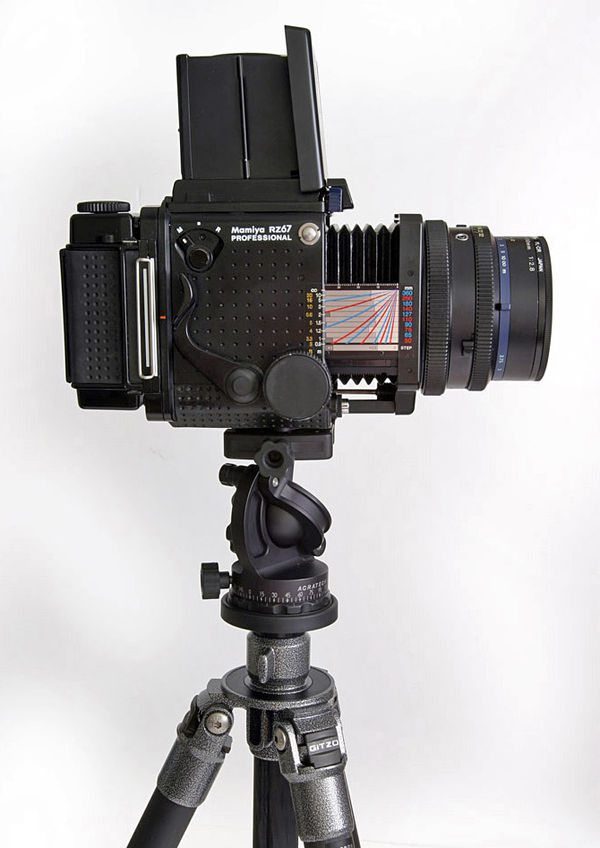

| Mamiya RZ67 | |
|---|---|
| 
RZ67 Pro I ready for shooting |
|
| Overview | |
| Maker | Mamiya |
| Type | Medium format SLR |
| Lens | |
| Lens mount | Custom Mamiya breech-lock bayonet mount |
| Sensor/medium | |
| ASA/ISO range | ISO 25 to 6400 [manual] |
| Focusing | |
| Focus | Manual |
| Exposure/medium | |
| Exposure | Manual, Aperture Priority with AE prism |
| Flash | |
| Flash | Hot shoe, PC socket |
| Shutter | |
| Frame rate | Manual lever winding, unmodified. |
| Shutter speed range | 8 s to 1/400 s, Bulb, Time |
| General | |
| Battery | 4 LR44 6 V battery or 4 LR44 1.5 volt batteries |
| Made in | Japan |
The Mamiya RZ67 is a professional medium format single-lens reflex system camera manufactured by Mamiya. There are three successive models: the RZ67 Professional (first model released in 1982), RZ67 Professional II (released in 1993) and RZ67 Professional IID (released in 2004). RZ67 is a modular camera system, meaning lenses, viewfinders, ground glasses, film winders and film backs are all interchangeable. It is primarily designed for studio use, but can also be used in the field. The RZ67 Sekor lenses have built-in electronic leaf shutters which are cocked and triggered from the body. Focusing is performed with a bellows on the body instead of the lenses.
The camera accepts 6×7, 6×6 and 6×4.5, 120 and 220 film magazines and Polaroid as well as Quadra 72 4×5 sheet film backs. Mamiya RB67 backs are also supported via the G-Adapter. The film speed is set on each RZ back via a dial. There are two versions of the 6×7 and 6×4.5 backs; the model II versions have a second film counter to always show the film count on the top. The RZ67 operates on one 6 V silver oxide 4SR44 battery, or 6 V 4LR44 alkaline battery. It can be used in emergency mode fully mechanically with a fixed 1/400 sec shutter speed. Multiple exposures are possible in the M-mode. Mirror flip up is supported. The body has one standard flash hot shoe on its left side, one plug for a standard remote shutter cable release, and a socket for an electronic shutter trigger. The RZ67 measures 104 mm (W) × 133.5 mm (H) × 211.5 mm (L) with the 110mm f/2.8 lens, and weighs approximately 2.4 kg (5.29 lbs). The flange distance is 105 mm.
The RZ67 name is adopted from the model name of the Mamiya RB67 (in which RB stands for "Revolving Back"), which was first introduced in 1970, thus the RZ67 also takes backs which can be rotated 90 degrees to provide a horizontal or vertical composition. The orientation is shown in the viewfinder with black guides. The viewfinder also hosts LEDs informing of the state of the camera (flash ready, low battery, dark slide not removed, shutter not cocked). In addition to manual operation (photographer chooses aperture and shutter speed), the RZ67 is able to operate in AEF mode with an AE viewfinder (AE being an abbreviation for automatic exposure), which transmits exposure information directly to the body. In RBL compatibility mode, the RZ67 is able to use RB67 lenses. The biggest difference between RB67 and RZ67 is that the RB67 is completely mechanical. The RZ67 has also mechanical couplings between the parts, but the shutter is electronic, and parts are able to transmit exposure information with electronic couplings. In addition, the RZ67 has plastic exterior body, which makes it somewhat lighter.
Versions
Original RZ67 Professional (RZ67 Pro I):
- Electronic shutter 8 sec: 1⁄400 sec with full EV steps
RZ67 Professional II (RZ67 Pro II):
- Some improvements of the electronics
- An additional knob was added to the right side of the focusing unit for fine tuning of the focus
- Shutter can be adjusted in 0.5 EV steps
RZ67 Professional IID (RZ67 Pro IID):
- Has an integrated interface for communicating with digital backs (the earlier versions need either an interface plate or external triggering wires)
- Minor internal mechanical improvements
RZ67 Pro I
RZ67 Pro I
Lenses
There are a wide variety of lenses available for the RZ67:
- Three Wide-angle lenses:
- 50 mm f/4.5. Two versions exist, the non ULD and ULD L (contains floating element), 23 mm equivalent (refers to the equivalent "angle of view" on a 35mm camera). The ULD version is clearly marked.
- 65 mm f/4, two versions (the second one has a floating element), 32 mm equivalent
- 75 mm f/3.5, with floating element, 36 mm equivalent
- 90 mm f/3.5, with extension tubes 1 and 2 has the largest magnification of all RZ67 lenses, able to shoot 1.92:1, 44 mm equivalent
- 110 mm f/2.8, smallest of the RZ lenses, also has largest aperture, 53 mm equivalent
- 127 mm f/3.5 and an older model f/3.8, 62 mm equivalent
- Eight Telephoto lenses:
- 150 mm f/3.5, 73 mm equivalent
- 180 mm f/4.5, 87 mm equivalent
- 210 mm f/4.5 APO, apochromatically corrected design, 102 mm equivalent
- 250 mm f/4.5, 2 versions (newer one is APO), 121 mm equivalent
- 350 mm f/5.6 APO, 170 mm equivalent
- 360 mm f/6.0, an older lens, 175 mm equivalent
- 500 mm f/6 APO and an older model f/8, longest of the RZ lenses, 238 mm equivalent
- Seven Specialty lenses:
- 37 mm f/4.5 Fisheye, (the widest RZ lens), captures 180 degrees diagonally across the frame, does not correct distortion, 18 mm equivalent
- 75 mm f/4.5 Short Barrel, possible to use with a tilt/shift adapter for perspective and focus plane control, needs an SB spacer for normal 75 mm use, 36 mm equivalent
- 75 mm f/4.5 Shift, perspective control lens, needs manual cocking of the shutter, 36 mm equivalent
- 140 mm f/4.5 Macro, two versions - "Mamiya M Macro L-A" and "Mamiya-Sekor Macro Z W" (both containing floating element system with "M" being the newer of the two, producing better results), able to shoot 1:3 without extension tubes or bellows and 1.22:1 with extension tubes 1 and 2, 68 mm equivalent
- 180 mm f/4 Variable Soft Focus, uses three interchangeable diffusion and spherical aberration disks for soft effect, 87 mm equivalent
- 180 mm f/4.5 Short Barrel, for tilt and shift adapter, needs an SB spacer for normal 180 mm use, 87 mm equivalent
- 100-200 mm f/5.2 Zoom, the only RZ zoom lens, 48-97 mm equivalent
- Most RB67 lenses which are mechanical only
All lenses have internal electronic Seiko #1 shutters with a maximum 1/400 sec speed, PC-type X flash sync plug, T-switch for long exposures, a plug for standard remote cable release for B exposures, depth of field preview lever, distance scale, aperture adjust ring. In "B" mode, the RZ67 models will expose up to 30 seconds (a warning beep will sound for the last 10 seconds). In "T" mode, the camera can expose indefinitely without drawing power from the battery. Most lenses, except for the 37 mm, 75 mm shift lenses and the 500 mm lenses have 77 mm filter threads on the front of the lens. The 75 mm shift lenses and the 500 mm lenses have 105 mm filter threads. Some lenses have a floating element; focusing these lenses involves setting a subject distance ring on the lens after focusing with the bellows.
Accessories
- Waist level viewfinder with a magnifier loupe (interchangeable with different dioptre adjusts)
- AE prism, prism and chimney viewfinders
- Vertical split image, matte, matte with corners, checker (default), microprism, crosshair and rangefinderspot microprism ground glasses
- Variable dioptre flip-up magnifier for RB and RZ prism finders
- G-2 Bellows lens hood (a simpler version of the G-3 Bellows lens hood)
- G-3 Bellows lens hood (65–350 mm lens adjustable)
- Bellows front hood extension for G-3 bellows lens hood
- 100–200 mm zoom lens mounting ring, prevents G-3 from rotating when zooming
- Gelatine filter holder for 50–350 mm lenses
- Adjustable sun shield plate
- Metz SCA 395 flash module
- Hot shoe PC flash adapter
- Quick shoe for fast attaching and detaching for tripods
- Mirror-up dual cable release (attaches both to body and lens)
- External battery case for keeping battery warm in cold weather
- Electromagnetic cable release
- Left hand grip (L-Grip) and U-shaped Aerial Grip, these attach to the electronic coupling on the body
- Adjustable flash bracket
- Infrared transmitter and receiver
- Tilt/Shift adapter for 75 mm and 180 mm SB lenses, with special electronic cable release adapter
- Ground glass for Tilt/Shift adapter
- Power winder, winds 1 frame per 1.5 sec, uses six AA cells, attaches to the base of the body
- 1.4× tele converter for best use with 90 mm, 110 mm, 127 mm, 140 mm, 180 mm and 100–200 mm lenses
- 45 mm and 82 mm auto extension tubes, electronically coupled
- short barrel spacer for use with the 75 mm and 180 mm short barrel lenses without the Tilt/Shift adapter at infiniti
- viewfinder masks for the 6×6 cm and 6×4.5 cm backs
Polaroid also made a radio transmitter and receiver for the RZ series.
Famous photos
Arguably the most famous photo taken with this camera is the "Bliss" photo used as the default background for Microsoft Windows XP. Seen by many millions of people every day, this photo was taken by photographer Charles O'Rear in 1996
References
- Diaz, Jesus (2014-04-10). "Photographer reveals the secret of the Windows XP desktop image". Sploid. Retrieved 13 April 2014.
Further reading
- Bob Shell (1995). Mamiya Pro Guide. Hove Foto Books, Newpro, Faringdon Oxon., UK. ISBN 0-906447-76-3.
External links
In English:
- RZ67II Review in ephotozine (2001) by David Tarn
- Mamiya RZ Lens Table by Christoph Sensen
- Mamiya RZ Closeup Tables for Film Backs by Christoph Sensen
- Man behind famous Windows XP wallpaper
In French:
- Mamiya RZ67 on www.collection-appareils.fr by Sylvain Halgand
In Japanese:
- The 6×4.5 and 6×7 SLRs in the Camera Museum of theMamiya official website, covers the original RZ67 Professional